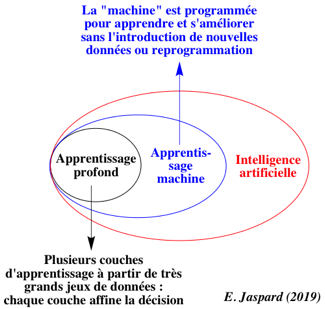

Yann Le Cun est un chercheur en intelligence artificiel et l'un des inventeurs du deep learning.
Il reçoit le prix Turing le 27 mars 2019 partagé avec Yoshua Bengio et Geoffrey Hinton.
Le deep learning, une partie du machine learning :


- Nom : Yann Le Cun
- Naissance : 8 Juillet 1960
- Profession : chercheur en intelligence artificielle et en vision artificielle